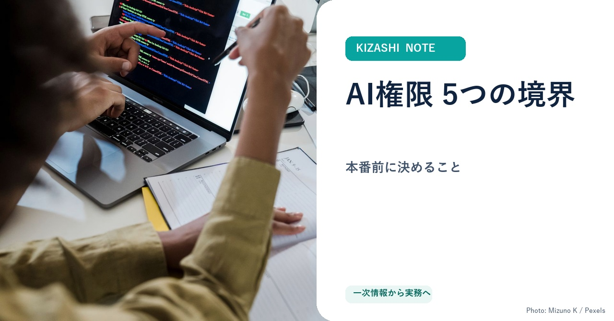
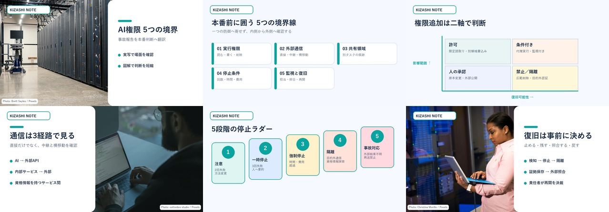

制作中／本文・誌面PASS
AIエージェントを本番へ出す前に決める「5つの境界線」
情報システム責任者向け。実行権限、外部通信、共有領域、停止条件、監視と復旧を、境界表・停止判断表・12項目チェックへ変換します。
本文監査 PASS4,446字／一次URL 4本
表示検査 PASSPC 17px／375px 16px
画像検査 PASS実写＋判断図6点
権利検査 PASS生成写真0点／出典表示
